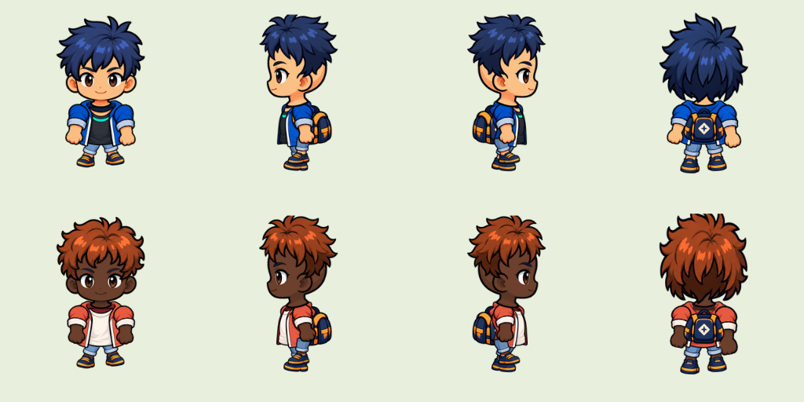
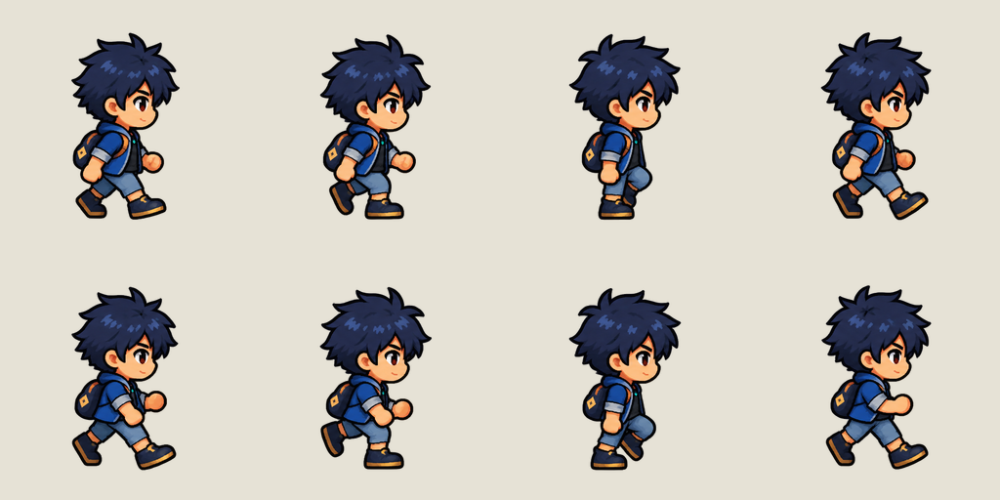

Avatar animável e customizável
Como produzir o Kael e qualquer outro jogador de modo que ele ande bem, fique igual em todos os quadros e aceite cabelo, pele e roupa diferentes sem refazer a animação. O método é o boneco de papel em camadas, usado em Stardew Valley, Habbo e no sprite universal LPC.
- Corpo base animado uma vez, em 4 diagonais. Manequim desenhado quadro a quadro, numa grade fixa, com o pé sempre no mesmo ponto. As direções são as diagonais da grade isométrica (26,57°). Só duas são desenhadas, frente-direita e costas-direita; as duas da esquerda são espelhos. Depois de aprovado, o corpo é congelado.
- Cor é paleta, não desenho. Pele, cabelo e roupa usam cores-chave reservadas; o jogo troca as rampas. Uma cor nova não custa arte nova.
- Cabelo e chapéu são 2 imagens, uma por direção desenhada (as da esquerda espelham), presas à âncora da cabeça marcada em cada quadro.
- Roupa de modelo diferente é uma camada por quadro sobre o manequim congelado. É a única parte cara; o resto vem da paleta.
- A IA gera referência e peças; a variação é montada pelo código. Nunca pedir à IA a mesma animação de novo para outra roupa.
1. Por que as tentativas falharam

kael-v2): 64 combinações e 4 direções, mas o movimento vem de girar peças. Braços sem cotovelo, perna curta e corpo sem peso: lê como marionete.
kael-frame-test): passada boa, joelho e cotovelo desenhados. Mas cabelo, mochila e contorno mudam de um quadro para o outro, e não há como trocar roupa sem gerar tudo de novo.As duas falham pelo mesmo motivo de fundo: pedem ao gerador de imagem a única coisa que ele não faz, repetir o mesmo desenho, idêntico, dezenas de vezes. Num personagem chibi de 96 px também não existe articulação suficiente para animar girando recortes. A saída é dividir o trabalho: o movimento é desenhado uma vez, a identidade (pele, cabelo, roupa) é trocada por paleta e por camadas presas a pontos fixos.
2. Camadas
| Camada | O que é | Quantos desenhos | Como varia |
|---|---|---|---|
| Corpo base | Manequim completo: cabeça sem cabelo (crânio rente), rosto, tronco, braços, pernas, tênis e roupa padrão. | 1 por quadro, por ação e direção | Só por paleta |
| Roupa de modelo | Jaqueta, moletom, vestido: só os pixels da peça, por cima do corpo. | 1 por quadro, para cada modelo | Modelo novo = camada nova; cor = paleta |
| Cabelo | Penteado, dividido em frente (sobre o rosto) e trás (atrás do corpo, para cabelo comprido). | 2 por estilo (as da esquerda espelham) | Estilo = imagem; cor = paleta |
| Acessório de cabeça | Boné, chapéu, faixa. | 2 por acessório | Imagem + paleta |
| Mochila e costas | Mochila, capa. | 2, ou 1 por quadro se balançar | Imagem + paleta |
Ordem de desenho (de trás para a frente):
| Direção | Ordem |
|---|---|
| Frente (SE, SW) | cabelo-trás · mochila · corpo · roupa · cabelo-frente · acessório |
| Costas (NE, NW) | corpo · roupa · cabelo-frente · cabelo-trás · mochila · acessório |
3. Grade do quadro
| Medida | Autoria (2×) | Jogo (1×) |
|---|---|---|
| Célula do quadro | 256 × 256 px | 128 × 128 px |
| Pivô (centro entre os pés, no chão) | (128, 224) | (64, 112) |
| Altura do personagem em pé DECIDIR | 192 px ± 4 | 96 px ± 2 |
| Linha dos olhos (frente) | y ≈ 92 | y ≈ 46 |
| Margem livre em volta | ≥ 8 px | ≥ 4 px |
São as medidas do piloto quadro a quadro do Codex, para aproveitar o que já existe. A redução de 2× para 1× é exata (fator inteiro) e o pixel de arte vale 2 px na autoria. As direções estão na seção seguinte.
Sem antialias contra o transparente: alpha é 0 ou 255. Contorno de 2 px na autoria (1 px no jogo), na cor contorno da paleta.
4. Direções no mundo isométrico
No mundo 2:1, andar ao longo de uma parede, de um móvel ou de um caminho clicado é andar na diagonal da tela, a 26,57°, e não a 45°. Com as 4 direções de tela usadas hoje, o personagem aparece de lado enquanto desliza na diagonal. Por isso o avatar usa as 4 diagonais da grade, como os jogos isométricos clássicos:
| Direção | Ângulo na tela | Quando aparece | Desenho |
|---|---|---|---|
| SE · frente-direita | 26,57° | descendo ao longo do eixo u da grade | desenhada |
| NE · costas-direita | −26,57° | subindo ao longo do eixo v | desenhada |
| SW · frente-esquerda | 153,43° | descendo ao longo do eixo v | espelho de SE |
| NW · costas-esquerda | −153,43° | subindo ao longo do eixo u | espelho de NE |
O jogo escolhe a diagonal mais próxima do movimento (função facingIso da bancada). Andar reto na tela, na horizontal ou na vertical, fica exatamente entre duas diagonais: nesse caso o personagem mantém a direção que já tinha, se ela for uma das duas, e não fica alternando. Uma camada assimétrica (franja de lado, bolsa de um lado só) marca "mirror": false e ganha os dois desenhos da esquerda.
Outros ângulos conferidos
- Câmera: o personagem é desenhado com a mesma inclinação da grade, visto um pouco de cima. A base dos pés é uma elipse 2:1, como o losango do piso. Vista totalmente de frente ou de lado, sem esse "de cima", destoa dos móveis.
- Luz: vem da esquerda e de cima, como nos cenários. Nas direções espelhadas a luz inverteria, então a sombra do corpo fica mínima no desenho (só volume), e o jogo desenha a sombra no chão.
- Escala: 96 px de altura no jogo, exatamente 3 células de altura da grade (32 px cada).
- Profundidade: o pivô dos pés é o ponto usado para ordenar o personagem com os móveis, igual à âncora das peças do Iso Studio.
- Pipa na mão (v2): cada quadro ganha também uma âncora da mão, para prender o carretel e a linha da mesma forma que o cabelo fica preso à cabeça.
5. Ações e quadros
| Ação | Quadros | Duração | Direções | Fase |
|---|---|---|---|---|
| Parado (respiração) | 4 | 180 ms | SE, NE | v1 |
| Andar | 8 | 100 ms | SE, NE | v1 |
| Correr | 6 | 80 ms | SE, NE | v2 |
| Empinar a pipa (puxar linha) | 4 | 120 ms | NE | v2 |
| Acenar, comemorar, dano | 4 cada | 110 ms | SE | v2 |
A v1 tem 24 quadros desenhados (2 direções × 12); as 2 direções da esquerda saem por espelho. Nomes: <acao>-<direcao>-<n>.png, por exemplo andar-e-0.png. O quadro 0 do andar é o contato do pé da frente com o chão; o ciclo fecha no 7 sem repetir o 0.
6. Paleta-chave
O corpo base e as camadas são desenhados só com as cores abaixo. Cada grupo é uma rampa do escuro para o claro; a troca de aparência substitui a rampa inteira, tom a tom. Qualquer outra cor é erro de conferência.
| Grupo | Tons | Rampa padrão (Kael) | Variações iniciais |
|---|---|---|---|
| contorno | 1 | #0b1020 | fixo |
| pele | 4 | #9a5634 #cf8350 #f0a868 #f9c995 | claro, mel, castanho, escuro |
| cabelo | 4 | #121838 #1e2a5e #2f4590 #4d6cbc | azul-noite, preto, castanho, cobre |
| jaqueta | 4 | #0e346e #13499a #2a6cc0 #5d95da | azul, terracota, verde-mata, mostarda |
| camiseta | 3 | #141a24 #252d3b #3c4757 | preta, creme, branca |
| calça | 3 | #3e5677 #5f7fa5 #8ba7c6 | jeans, caqui, preta |
| tênis | 3 | #1b2030 #2d354a #47516b | marinho, branco, vermelho |
| detalhe | 2 | #b67a1f #e8b24c | latão, prata |
| mochila | 3 | #272c42 #3b435e #57617e | marinho, terracota, verde |
| olhos | 2 | #ffffff #2a1a10 | fixo (cor da íris pode virar grupo na v2) |
As rampas são o ponto de partida; o Avatar Studio permite ajustá-las depois de mapear a arte real. O que não pode mudar é o número de tons de cada grupo, porque a troca é feita tom a tom.
7. Âncora da cabeça e cabelo
Cada quadro do corpo base declara a âncora da cabeça: o centro do crânio (meio da cabeça na horizontal, na altura da linha dos olhos). Ela acompanha o balanço do passo. O cabelo e os acessórios são desenhados uma vez por direção desenhada (2) e posicionados pela âncora: o ponto do cabelo que corresponde ao centro do crânio cai exatamente nela.
Fazer
- Corpo base com crânio rente, na cor do
cabelotom 1: qualquer penteado cobre. - Cabelo com a mesma largura de cabeça nas 2 direções.
- Variação de altura da âncora entre quadros vizinhos de no máximo 2 px (1×).
Não fazer
- Desenhar o penteado no corpo base: ele não poderia ser trocado.
- Cabelo que se move sozinho por quadro (na v1 ele só acompanha a cabeça).
- Usar cores de pele no cabelo ou de cabelo na pele.
8. Roupas de modelo
A roupa padrão já faz parte do corpo base (jaqueta aberta, camiseta, bermuda jeans, tênis). Um modelo diferente é uma camada do mesmo tamanho do quadro, com só os pixels da peça, desenhada por cima do corpo base congelado, quadro a quadro. Regras:
- Usa apenas grupos de roupa da paleta (jaqueta, camiseta, calça, detalhe, contorno).
- Fica dentro da silhueta do corpo, com no máximo 3 px (1×) a mais para volume de tecido.
- Nenhum pixel de pele fica descoberto onde a roupa deveria cobrir; nenhum pixel do corpo aparece através dela.
- Começar com 2 modelos (padrão + moletom). Cada modelo novo custa 24 quadros na v1, então a variedade vem principalmente das cores.
9. Produção com o Codex
- Folha de modelo. Kael em frente-direita e costas-direita (mais uma vista de frente só como referência de rosto), em pé, visto de cima na inclinação da grade, já na paleta-chave, no tamanho 2×. É a referência de identidade de tudo. Revisada por você antes de seguir.
- Corpo base, uma ação e uma direção por pedido. A imagem de referência é a folha de modelo mais a guia de quadros do Avatar Studio (células com linha do chão, pivô e linha dos olhos). O gerador entrega as poses; a limpeza vem a seguir.
- Limpeza no Avatar Studio: recorte nas células, registro no pivô, mapeamento para a paleta-chave, correção de variações (o que mudou entre quadros e não é movimento é repintado igual ao quadro 0). Depois disso o corpo base é congelado: nunca mais é gerado.
- Âncora da cabeça marcada em cada quadro (automática com conferência manual).
- Cabelos: um pedido por estilo, 2 direções, sobre a cabeça do quadro 0 de cada direção.
- Roupas de modelo: um pedido por quadro, com o quadro do corpo base como referência e a instrução de pintar só a peça. É o trecho que mais exige revisão.
Modelos de pedido
Corpo base (troque ação, direção e número de quadros):
Sprite sheet de personagem para jogo 2D, estilo da imagem de referência (Kael), mesmo traço, mesma proporção e mesma roupa. Andar, vista frente-direita (diagonal da grade isométrica 2:1, 26,57°), 8 quadros, em uma grade de 4 colunas × 2 linhas de células de 256 × 256 px, exatamente como a guia: pés no ponto marcado de cada célula, cabeça na linha indicada, mesmo tamanho em todos os quadros. Quadro 1 = pé da frente tocando o chão; ciclo completo. Cabeça com cabelo raspado rente, sem penteado. Use apenas as cores da paleta anexada, sem degradê, sem brilho, sem sombra no chão. Contorno de 2 px na cor #0b1020. Fundo transparente real, sem textos.
Cabelo:
O mesmo penteado, [estilo], nas 2 vistas: frente-direita e costas-direita (diagonais da grade isométrica 2:1), para encaixar na cabeça raspada da referência: mesma largura de cabeça, sem rosto, sem corpo. Uma célula de 256 × 256 por vista, com a cabeça no mesmo lugar da guia. Só as 4 cores do grupo cabelo e o contorno #0b1020. Fundo transparente real.
Roupa de modelo (um quadro por pedido):
Pinte apenas um [moletom com capuz] sobre o personagem da referência, exatamente na mesma pose, mesmo tamanho e posição (célula de 256 × 256). Entregue só os pixels da roupa, com fundo transparente, sem cabeça, mãos ou pernas. Siga a silhueta do corpo, no máximo 6 px de volume a mais. Só as cores dos grupos jaqueta, camiseta, detalhe e o contorno #0b1020.
10. Conferência
O Avatar Studio aplica estas verificações a cada quadro e camada. Uma reprovação impede considerar a peça pronta.
| Verificação | Reprova quando |
|---|---|
| Tamanho da célula | diferente de 256 × 256 (2×) ou 128 × 128 (1×) |
| Pé no pivô | linha de apoio fora de y = pivô ± 1 px |
| Altura do personagem | variação maior que 2 % entre quadros da mesma ação |
| Paleta | mais de 0,5 % dos pixels fora da paleta-chave |
| Alpha | pixels semitransparentes (antialias ou halo) |
| Âncora da cabeça | quadro sem âncora, ou salto maior que 3 px (1×) entre quadros vizinhos |
| Cabelo preso | menos de 60 % da borda de baixo do cabelo sobre a cabeça do corpo |
| Roupa na silhueta | pixels da roupa a mais de 3 px (1×) fora do corpo |
| Deriva entre quadros | aviso quando a área de cabelo ou de mochila muda mais de 12 % entre quadros vizinhos (sinal de redesenho da IA) |
11. Entrega e manifesto
assets/avatar/v1/ base/andar-se-0.png … parado-ne-3.png corpo base indexado na paleta-chave roupas/moletom/andar-e-0.png … camadas de roupa cabelo/espetado-se.png -ne camadas de cabelo (frente e trás) paleta.json grupos, rampa padrão e variações manifest.json ações, quadros, pivô, âncoras, camadas art/avatar/v1/ fontes/ prompts.json conferencia.json avatar.avatarstudio.json
{
"cell": [128, 128], "pivot": [64, 112], "scale": 1,
"actions": {
"andar": {"ms": 100, "loop": true, "directions": {
"se": [{"image": "base/andar-se-0.png", "head": [70, 46]}, …],
"ne": […],
"sw": {"mirror": "se"}, "nw": {"mirror": "ne"}
}}
},
"layers": {
"cabelo/espetado": {"kind": "head", "images": {"se": "cabelo/espetado-se.png", …}, "anchor": {"se": [32, 30], …}},
"roupa/moletom": {"kind": "frames", "dir": "roupas/moletom"}
},
"palette": "paleta.json", "rulesVersion": "avatar-1"
}
No jogo, a aparência escolhida é composta uma vez numa folha de sprites em memória (troca de rampas + camadas), e a animação usa essa folha como hoje. Custo de desempenho zero durante a partida.
12. Integração e decisões
- Decidido: 4 diagonais da grade (SE e NE desenhadas, SW e NW por espelho), 24 quadros na v1. Hoje o jogo usa 4 direções de tela; a troca para
facingIsoentra junto com o novo avatar. - DECIDIR Altura de 96 px (do piloto) ou 102 px (≈ 3,2 células, como na especificação da grade). A recomendação é 96: exatamente 3 células e já é o tamanho do piloto.
- DECIDIR Escopo da v1: parado + andar nas 2 diagonais desenhadas, 1 roupa de modelo extra, 3 cabelos, todas as rampas da tabela.
- O andar do piloto do Codex é de perfil, e o perfil não existe nas 4 diagonais. Ele serve para testar a bancada; o corpo base é gerado de novo em SE e NE com a cabeça raspada, e o cabelo espetado dele vira a primeira camada de cabelo.
- Seleção de aparência e salvamento na conta ficam para depois da arte aprovada, validados no servidor como os outros dados do jogador.